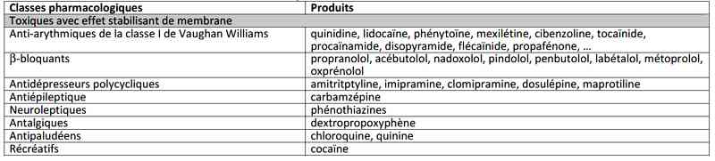
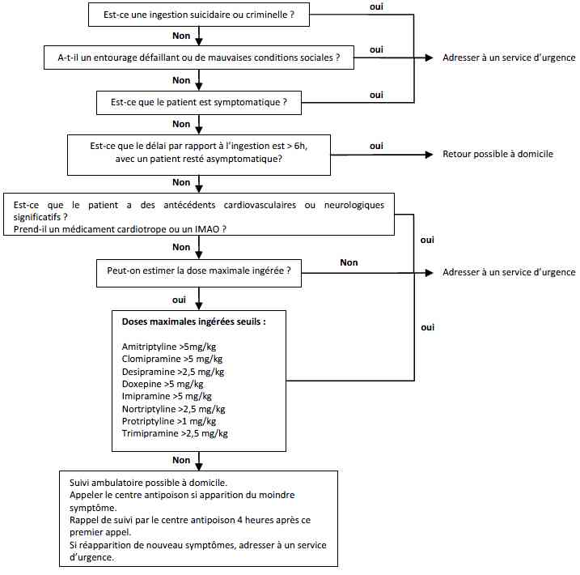
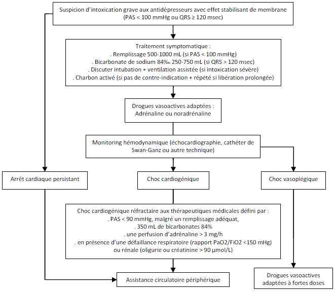

Bienvenue Sur Medical Education
Intoxication : antidépresseurs tricycliques
Spécialité : pediatrie / toxicologie /
Points importants
- La normalité d'un examen clinique précoce ne permet pas de préjuger de l'évolution
- Reste fréquente malgré la prescription très large des inhibiteurs de recapture de la sérotonine
- Les intoxications aiguës par les antidépresseurs polycycliques sont potentiellement graves, en raison du risque de convulsions, d'arythmie ventriculaire et de défaillance myocardique. Le principal facteur pronostique est l'élargissement des QRS
- Responsable d'une encéphalopathie anticholinergique et d'un effet stabilisant de membrane
-
Le syndrome anticholinergique ou atropinique doit être évoqué devant :
- un syndrome confusionnel
- une tachycardie sinusale
- des pupilles dilatées et symétriques
- une soif
- une sécheresse cutanéomuqueuse
- une rétention d'urines (globe vésical)
- une absence de bruits de transit intestinal
- et/ou une hyperthermie
- Contre-indication du flumazénil devant un coma si hypertonie pyramidale, signes atropiniques ou effet stabilisant de membrane
- En cas de troubles conductifs graves intraventriculaires, le bicarbonate de sodium à 8,4% est recommandé à raison de 100 à 250 mL en 15 à 20 min, sans dépasser une dose maximale de 750 mL
Présentation clinique / CIMU
SIGNES FONCTIONNELS
Troubles neurologiques
- Tremblements, dysarthrie, agitation, délire
- Confusion, obnubilation, coma, convulsions, myoclonies
Troubles cardio-circulatoires
- Tachycardie
- Lipothymie, palpitations, douleur thoracique, malaise
- Arrêt cardiaque
Troubles respiratoires
- Polypnée, dyspnée, détresse respiratoire
Troubles abdominaux
- Douleurs abdominales, ballonnement
- Globe vésical, oligurie, anurie
CONTEXTE
Terrain
- Intoxication volontaire : patient dépressif
- Surdosage : erreur de prescription ou d'administration
Traitement usuel
- Antidépresseur tricyclique
Antécédents
- Dépression
- Tentative de suicide
Circonstances de survenue
- Tentative de suicide par ingestion le plus souvent
- Accident lors d'erreur de prescription ou d'administration
EXAMEN CLINIQUE
- Anomalies dans les 4-6 h
- Eduction du risque si > 6h
- Aggravation possible jusqu'à 72h
- La normalité d'un examen clinique précoce ne permet pas de préjuger de l'évolution.
Symptômes neurologiques : encéphalopathie anticholinergique
- Agitation, hallucinations, confusion, dysarthrie
- Tremblement des extrémités
- Incoordination motrice
- Myoclonies
- Convulsions favorisées par les stimulations nociceptives
- Syndrome pyramidal avec hypertonie prédominant sur les extenseurs des membres inférieurs et les fléchisseurs des membres supérieurs, signe de Babinski bilatéral, trépidation épiléptoïde, clonus de la rotule
- Coma peu profond sans signes de localisation
- Coma calme, hypotonique, hyporéflexique et convulsions rares, si association aux BZD
Syndrome atropinique
- Tachycardie
- Bouche sèche
- Mydriase
- Rétention urinaire
- Réduction des bruits hydro-aériques
Symptômes respiratoires
- Dyspnée, polypnée
- Crépitants à l'auscultation
- Foyer d'inhalation
Symptômes cardiovasculaires
- Tachycardie
- Collapsus, choc
EXAMENS PARACLINIQUES SIMPLES
ECG
- Tachycardie sinusale, tachycardie supraventriculaire ou jonctionnelle
- Effet stabilisant de membrane : QRS élargi, ondes T aplatis, QT modérément allongé
- Déviation axiale droite, bloc de branche droit,
- Bloc auriculo-ventriculaire
- Extrasystoles ventriculaires
- TV, torsades de pointes, FV
- Bradyarythmie précédent une asystolie
- Aspects de syndrome de Brugada
FACTEURS PRONOSTIQUES
- QRS > 0,16 s corrélé avec la survenue de convulsions et d'arythmies ventriculaires ; l'élargissement des QRS est prédictif de la survenue de crises convulsives et/ou d'arythmies ventriculaires
- Pour des QRS = 100 ms, le risque de complications est faible
- Pour des QRS entre 100-160 ms, le risque de convulsions est significatif (environ 30 % des cas) alors que celui de troubles du rythme ventriculaire faible (10 %).
- Pour des QRS = 160 ms, les troubles du rythme ventriculaire sont fréquents (50 %)
-
Certains auteurs ont proposé d'autres indices ECG pour prédire le risque, tels que :
- la déviation axiale droite des 40 dernières millisecondes (T40-ms) du QRS = 120°
- ou l'amplitude de l'onde R (= 3 mm) en aVR et le rapport R/S en aVR
- Convulsions
- Hypoxémie
- Profondeur du coma
- Association aux IMAO (labilité tensionnelle, troubles thermiques, fréquence des convulsions.)
-
Le décès fait suite à la défaillance hémodynamique ou à un arrêt cardiaque, dans les 24 premières heures. Plusieurs éléments sont associés à une surmortalité :
- l'ingestion d'antidépresseur tricyclique de première génération
- la précocité des troubles
- la profondeur du coma et les crises convulsives
- les perturbations ECG (largeur des QRS)
- le choc réfractaire
- Des morts subites tardives, dont le mécanisme est mal élucidé, ont été rapportées
- L'embolie pulmonaire pourrait jouer un rôle dans la survenue de ces accidents
RELATION DOSE-EFFET
- Il faut se méfier de l'association à dose moindre de plusieurs antidépresseurs dont les effets cardiaques s'additionnent
- Le syndrome anticholinergique, parfois accompagné de convulsions, apparaît dès 500 mg chez l'adulte et 5 mg/kg chez l'enfant
- Les troubles de conduction cardiaque apparaissent à des doses de l'ordre de 1 g chez l'adulte, et de 10 mg/kg chez l'enfant
- Le pronostic vital est engagé, même avec un traitement adapté au-delà de 2 g chez l'adulte et de 10 mg/kg chez l'enfant
CIMU
- Tri 1 ou 2 en fonction de l'atteinte des fonctions vitales
Signes paracliniques
BIOLOGIQUES
-
Gazométrie :
- hypoxémie
- hypercapnie (hypoventilation alvéolaire, inhalation)
- acidose métabolique ou respiratoire
-
Ionogramme sanguin et créatininémie :
- insuffisance rénale aiguë
- bicarbonates abaissés
- hypokaliémie de transfert
- Hyperlactatémie (si choc ou sepsis)
-
Ionogramme urinaire :
- mécanisme de l'insuffisance rénale aiguë (par déshydratation ou nécrose tubulaire aiguë)
-
Bilan d'hémostase :
- baisse du taux de prothrombine
- baisse des facteurs de l'hémostase
- CIVD
-
Bilan hépatique :
- élévation des transaminases
- stigmates d'insuffisance hépatique (foie de choc)
TOXICOLOGIQUES
-
Dépistage des antidépresseurs tricycliques :
- faux positifs: carbamazépine (Tégrétol®) et phénothiazines
- faux négatifs : antidépresseurs tétracycliques (Ludiomil®, Athymil®)
-
Dosage plasmatique de l'antidépresseur ingéré (molécule mère et métabolites actifs) : grave si >1 mg/L (environ 3 µmol/L)
- un dosage pondéral n'est pas nécessaire pour guider la stratégie thérapeutique, mais en cas d'intoxication sévère, il peut être utile de surveiller la décroissance des concentrations. Des décès tardifs ont été rapportés liés à des réabsorptions prolongées.
- au cours de l'évolution, la surveillance des concentrations plasmatiques d'antidépresseur tricyclique permet d'expliquer des phases d'éveil relatif puis d'approfondissement de la conscience. Les comprimés forment volontiers dans l'estomac des conglomérats à délitement progressif avec réabsorption lors du réveil.
- au décours de l'intoxication, la persistance de petits signes atropiniques et des anomalies de la repolarisation doivent faire rechercher la persistance tardive de concentrations élevées d'antidépresseur tricyclique.
-
Relation entre la concentration plasmatique et le pronostic :
- il existe une relation peu étroite et d'un intérêt moindre que l'approche clinique et ECG. Une intoxication grave s'observe pour une concentration plasmatique > 1 mg/L (environ 3 µmol/L) (imipramine et amitriptyline).
- des intoxications graves ont été rapportées avec des concentrations plus faibles, et à l'inverse, des concentrations plus élevées ont été observées, accompagnées uniquement de manifestations cardiaques mineures.
AUTRES
Radiographie pulmonaire
- Pneumonie d'inhalation
- Atélectasies
- Œdème pulmonaire lésionnel ou syndrome de détresse respiratoire aigu
EEG
- Ecarter un état de mal infraclinique
Diagnostic étiologique
- Diagnostic basé initialement sur l'anamnèse et le tableau clinique (toxidrome anticholinergique + effet stabilisant de membrane)
- Dosage spécifique dans le plasma de la molécule d'antidépresseur ingérée et de ses métabolites pour confirmer le diagnostic
Diagnostic différentiel
-
Autre intoxication par un psychotrope avec effet anticholinergique :
- certains neuroleptiques
- certains antihistaminiques antiparkinsoniens, ou solanacées (datura)
- Autre intoxication par un cardiotrope avec effet stabilisant de membrane
 _565 Tableau Toxiques avec effets stabilisant de membrane
- Autre cause de coma (toxique ou non toxique)
-
Autre trouble cardiaque d'origine non toxique
Traitement
TRAITEMENT PREHOSPITALIER / INTRAHOSPITALIER
Stabilisation initiale
- Voie veineuse de bon calibre
- Intubation si troubles de la conscience, encéphalopathie avec troubles de déglutition, convulsions répétées, collapsus sévère
- Remplissage vasculaire modéré (environ 1000 mL de NaCl 0,9%)
- Adrénaline adaptée à la PA si choc
-
Bicarbonates 8,4% 250 mL débit libre + 2 g de KCl si QRS = 0,12 s + HoTA :
- objectif : réduire le bloc intra-ventriculaire
- critères d'efficacité : correction du QRS et de l'HoTA
- BZD si convulsions
- Contre-indication du flumazénil (Anexate®)
- Les convulsions sont habituellement brèves et répondent aux benzodiazépines
- Lors d'un état de mal épileptique, le phénobarbital est utile
- L'emploi du thiopental expose au risque d'HoTA et celui de la phénytoïne au risque d'effets cardiopresseurs
Suivi du traitement
- Charbon activé si vu dans les 2h, en l'absence de contre-indications
- Monitorage hémodynamique : La persistance d'un collapsus malgré le remplissage initial impose de pratiquer une étude hémodynamique
- Traitement du choc (catécholamines adaptées au profil hémodynamique)
- Compensation des pertes hydro-électrolytiques
- Correction prudente de l'hypokaliémie car pool potassique conservé : 80-160 mEq/j (4-6 g/j) sans jamais dépasser le double même pour une kaliémie < 2 mmol/L, pour éviter un risque d'arythmie ventriculaire secondaire à l'hyperkaliémie au moment de la disparition de l'effet stabilisant de membrane.
- Choc électrique externe si troubles du rythme ventriculaire grave ; si récidive, la plupart des anti-arythmiques sont contre-indiqués.
- Assistance circulatoire
- Discuter assistance circulatoire si état de choc ou AC réfractaire
- Poser l'indication avant l'apparition d'une défaillance multiviscérale
- Les modalités et indications de l'assistance circulatoire doivent encore être précisées pour les intoxications par la chloroquine (niveau de preuve C)
- L'assistance périphérique par pompe centrifuge à débit continu avec canulation chirurgicale fémorale est la meilleure solution. Elle doit être proposée chez tout patient intoxiqué et présentant un arrêt ou une défaillance cardiaque réfractaire aux thérapeutiques pharmacologiques
- Il n'existe pas de seuil établi pour définir un choc réfractaire aux catécholamines
- Nous avons suggéré que la présence d'une HoTA malgré une perfusion d'adrénaline > 3 mg/h en présence d'une insuffisance rénale ou d'une hypoxémie majeure, serait prédictive du décès sans traitement d'exception
MEDICAMENTS
- Aucun antidote spécifique.
- La physostigmine, inhibiteur réversible de l'acétylcholinestérase, s'oppose aux effets centraux des antidépresseurs tricycliques (myoclonies et convulsions) et possède un effet stimulant respiratoire
- Son utilisation en routine est abandonnée en raison de sa courte demi-vie (30-45s) et des risques liés au surdosage (encéphalopathie, convulsions et asystole)
Surveillance
CLINIQUE
- PA, FC, FR, SpO2, conscience, diurèse/4h
- Scope systématique
- Paramètres de ventilation mécanique si intubé et ventilé
PARACLINIQUE
- Ionogramme sanguin, créatininémie, urée sanguine, gazométrie, lactatémie
- ECG
- NFS, bilan d'hémostase (TP et facteur V), transaminases, CPK
- Radiographie de thorax
- Dosage spécifique de l'antidépresseur dans le plasma
Devenir / orientation
- Les troubles neurologiques ou cardiovasculaires apparaissent dans les 4-6 h suivant l'ingestion. Des aggravations ont été rapportées jusqu'à la 72e h. La normalité d'un examen clinique précoce ne préjuge donc pas de l'évolution
- La dose ingérée est peu prédictive de l'évolution finale en raison d'une forte variabilité interindividuelle. Les doses ingérées sont toxiques (> 500 mg), responsables d'intoxications sévères (> 1 g) ou menaçant le pronostic vital (> 3 g). Néanmoins, des ingestions de 20 mg/kg se sont avérées fatales.
CRITERES D'ADMISSION
A l'UHCD
- Patient resté asymptomatique au-delà de 6h après ingestion
- Signes anticholinergiques sans trouble de vigilance ou anomalies ECG ou hémodynamique (à condition de pouvoir scoper le patient)
- Prévoir un avis psychiatrique en cas d'intoxication volontaire
En réanimation
- Admission systématique pour toute intoxication avec collapsus, anomalies ECG ou trouble de vigilance
CRITERES DE SORTIE DE REANIMATION
- Patient resté asymptomatique pendant > 6h
- Extubation si ventilation mécanique
- Patient conscient et non confus
- Régression des troubles anticholinergiques
- Régression des troubles cardiaques et normalisation de l'ECG
- Après avis psychiatrique en cas d'intoxication volontaire
Mécanisme / description
GENERALITES
- Les antidépresseurs polycycliques possèdent une structure tricyclique (dérivés imipraminiques), tétracyclique (amoxapine, maprotiline et mirtazapine) ou bicyclique (miansérine). Malgré une baisse de leur prescription, ils représentent toujours une cause importante des intoxications médicamenteuses volontaires admises aux Urgences et en Réanimation.
TOXICOCINETIQUE
- L'absorption digestive des antidépresseurs tricycliques est ralentie par l'effet anticholinergique
- Leur volume de distribution est important. Ils sont fortement liés aux protéines plasmatiques
- Les antidépresseurs tricycliques subissent un métabolisme hépatique (déméthylation et hydroxylation), aboutissant souvent à des dérivés actifs. Les principales enzymes qui interviennent sont les cytochromes P450 (CYP) 2D6 et 2C19
- L'élimination est urinaire sous forme inchangée ou de métabolites. Elle est accrue par l'acidification des urines. Leur demi-vie d'élimination est allongée en cas d'ingestion massive (8-45h). Certains métabolites actifs comme la nortriptyline ont des demi-vies longues (93h). Suite à une intoxication massive, la cinétique d'élimination des antidépresseurs tricycliques est d'ordre zéro, en raison de la saturation des enzymes d'hydroxylation
- Les antidépresseurs tricycliques subissent un cycle entéro-hépatique et malgré une élimination digestive de 30 %, peu de métabolites sont retrouvés dans les selles.
PHYSIOPATHOLOGIE
- Effet stabilisant de membrane : Le support est un blocage des canaux sodiques et potassiques entraînant une diminution du flux sodique entrant dépolarisant en phase 0 et du flux potassique sortant repolarisant en phase 3. Ces perturbations sont à l'origine du ralentissement de la vitesse de propagation de l'influx et de l'allongement de la période réfractaire. En diminuant l'entrée de calcium voltage-dépendant en phase 2 du potentiel d'action, la chloroquine provoque un effet inotrope négatif. Le mécanisme est identique au niveau des cellules musculaires lisses vasculaires à l'origine d'une vasodilatation.
- Hypokaliémie : Elle est liée à un mécanisme de transfert. Le rôle délétère de l'hypokaliémie est discuté. Elle pourrait aggraver les effets proarythmogènes du blocage de la conduction ventriculaire, de l'augmentation d'automaticité et de l'allongement du QT. A l'inverse, elle pourrait être protectrice, en induisant une inhibition relative de la pompe Na-K-ATPase membranaire nécessaire pour restaurer un certain degré d'inotropisme et d'excitabilité myocardique. C'est pourquoi, en raison d'une pathogénie incertaine, la correction de l'hypokaliémie même profonde doit être prudente car difficile et exposant au risque d'arythmie ventriculaire lors du transfert extracellulaire, après élimination du toxique, de l'excès de potassium apporté.
-
Les signes cardiovasculaires résultent d'une action double :
- indirecte via le système nerveux autonome, par un blocage de la recapture des catécholamines et une activité anticholinergique, responsables d'une accélération des pacemakers sinusal et jonctionnel
- directe par un effet stabilisant de membrane, quinidine-like, caractérisé par une altération du potentiel d'action. La phase zéro du potentiel d'action est ralentie, ce qui freine l'automatisme sinusal (bradycardie) et la conduction intraventriculaire (QRS élargis); la phase 2 est déprimée ce qui réduit l'entrée du calcium (baisse de l'inotropisme). Les antidépresseurs tricycliques pourraient également réduire le couplage actine/myosine calcium-dépendant nécessaire à la contraction musculaire
- Les antidépresseurs tricycliques sont responsables d'effets chronotrope, inotrope et dromotrope négatifs à tous les étages ainsi que d'un effet pro-arythmogène et vasodilatateur. Aux troubles conductifs intraventriculaires à l'origine de l'asynergie de contraction des parois de chaque ventricule, s'associe sur chaque fibre, l'effet inotrope négatif direct du toxique. Si les conditions de précharge l'autorisent, l'élévation du tonus sympathique maintient le débit cardiaque et la PA dans des valeurs normales. Mais cet équilibre est précaire. L'hypoxémie, l'acidose, l'hypovolémie, l'hyperthermie ou les crises convulsives stimulent l'effet stabilisant de membrane et exposent au collapsus avec élargissement des QRS. Si ce collapsus n'est pas corrigé rapidement, le débit cardiaque et la PA s'effondrent, ce qui est à l'origine d'une bradycardie à complexes élargies, de troubles de l'excitabilité ventriculaire (FV) ou d'une asystole.
Algorithme
- Algorithme 1 : Prise en charge ambulatoire après exposition à un antidépresseur tricyclique
 _697 Algorithme Prise en charge ambulatoire après exposition à un antidépresseur tricyclique
- Algorithme 2 : Traitements des intoxications par antidépresseurs avec effet stabilisant de membrane
 _698 Algorithme Traitements des intoxications par antidépresseurs avec effet stabilisant de membrane
Bibliographie
- Boehnert MT, Lovejoy FH. Value of the QRS duration versus the serum drug level in predicting seizures and ventricular arrhythmias after an acute overdose of tricyclic antidepressants. N Engl J Med 1985, 313:474-479.
- Monteban-Kooistra WE, Van Den Berg MP, Tulleken JE, Ligtenberg JJ, Meertens JH, Zijlstra JG. Brugada electrocardiographic pattern elicited by cyclic antidepressants overdose. Intensive Care Med 2006, 32:281-285.
- Baud FJ, Megarbane B, Deye N, Leprince P. Clinical review: Aggressive management and extracorporeal support for drug-induced cardiotoxicity. Crit Care 2007, 11:207.
- Woolf AD, Erdman AR, Nelson LS, Caravati EM, Cobaugh DJ, Booze LL, Wax PM, Manoguerra AS, Scharman EJ, Olson KR, Chyka PA, Christianson G, Troutman WG. Tricyclic antidepressant poisoning: an evidence-based consensus guideline for out-of-hospital management. Clin Toxicol (Phila) 2007, 45:203-233.
Auteur(s) : Bruno MEGARBANE